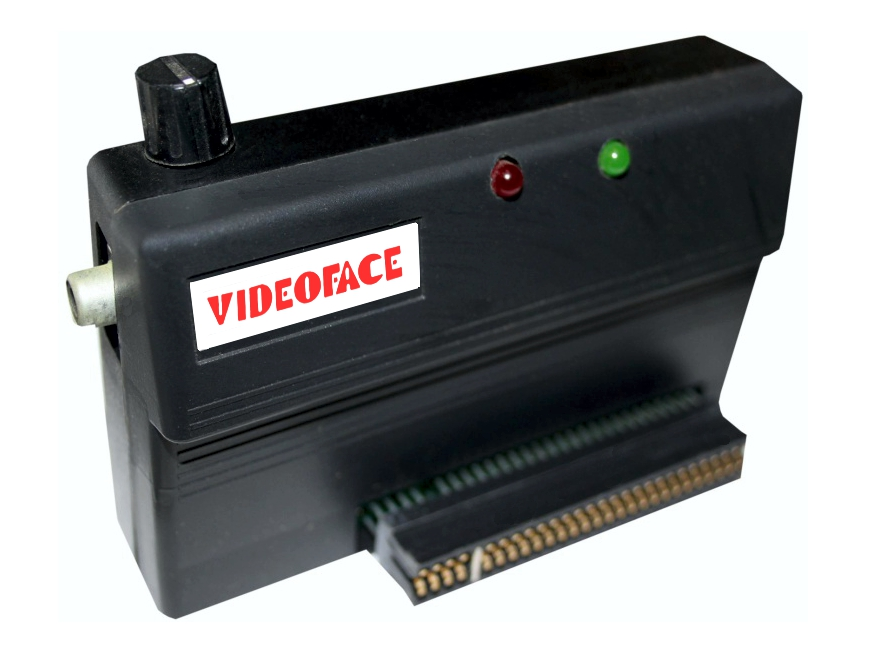

Videoface Digitizer
Real-time video frame capture for the ZX Spectrum, at £69

Overview
The Videoface Digitizer is a video frame capture peripheral for the Sinclair ZX Spectrum home computer, first produced by Data-Skip of the Netherlands in 1986 and later manufactured by Romantic Robot UK Ltd from 1987. The device connects to the Spectrum's expansion port and accepts any standard composite video signal — from a video camera, VCR, laserdisc player, or live television broadcast — and captures grayscale frames at 256×192 pixels with 4-bit (16-level) intensity at just under four frames per second.
A single contrast knob on top of the unit adjusts the digitized image brightness in real time. Captured frames could be saved to disk or tape as still images or assembled into crude animations. Originally sold for £69, the price dropped to £30 within a few years.
The Videoface occupies a unique position among museum peripherals: it is neither a scanner (Logitech ScanMan captures static documents), nor a digital camera (Dycam/Logitech Fotoman captures the world through a lens), nor a video game interface (Worlds of Wonder Action Max uses VHS as game content). It is a real-time video capture peripheral — the bridge between the analog broadcast world and a home computer's digital pixel grid.
Deep dive
Developed during the mid-1980s boom in ZX Spectrum peripherals. Data-Skip, a Dutch company, first released the device in 1986. Production later transferred to Romantic Robot UK Ltd, known for the Multiface snapshot/backup peripheral.
The capture loop: (1) connect a composite video source; (2) load the capture software from cassette; (3) observe the live digitizing feed at ~4 fps; (4) turn the physical contrast knob to adjust brightness; (5) use keyboard controls to shift the capture window; (6) freeze and save the frame. Captured images could be loaded into art programs for pixel editing. Animations could be assembled from sequences of frames.
Edge connector interface for ZX Spectrum. Composite video input jack. Physical contrast knob. Produces 256×192 pixel images at 16 gray levels. Frame rate just under 4 fps.
Reviewed in Crash magazine (February 1987) and Your Sinclair (May 1988, July 1992). Reviewers praised its capability for the price but noted the Spectrum's display resolution limitations.
Arrived at a moment when video digitizers were transitioning from expensive broadcast equipment to consumer peripherals. The Amiga had built-in genlock (1985), but the 48KB ZX Spectrum had to rely on external hardware. Competing products included the DS-69 Digisector for TRS-80 Color Computer.
Team & pioneers
- Data-Skip Original Dutch manufacturer, 1986 release.
- Romantic Robot UK Ltd UK manufacturer from 1987, also known for the Multiface peripheral.